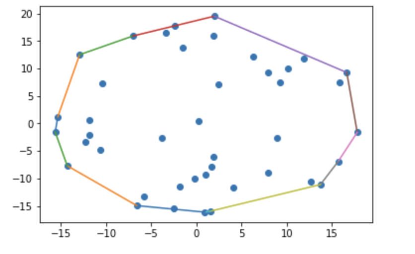

The Kirk-Patrick Seidel Algorithm is a computational geometry algorithm used to find the convex hull of a set of points in the plane. The convex hull is the smallest possible convex polygon that encloses all points in the given set. It is also called Prune-and-Search algorithm.
The basic idea of the KPS algorithm is a type of reversal of the divide-and-conquer algorithm for convex hulls. This algorithm tells us to divide the problem into subproblems, solve the subproblems, and finally merge the subsolutions.
Finally, it can be said that the Kirkpatrick-Seidel algorithm begins by dividing the input points based on the median x-coordinate. It then identifies convex hull edges intersecting the median-defined vertical line, discards non-contributing points, and proceeds recursively with remaining points. Recursion is separately performed for upper and lower hulls, discarding points accordingly. This process is repeated until the entire convex hull is obtained.
